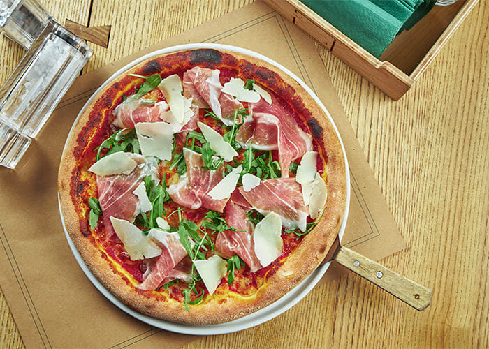
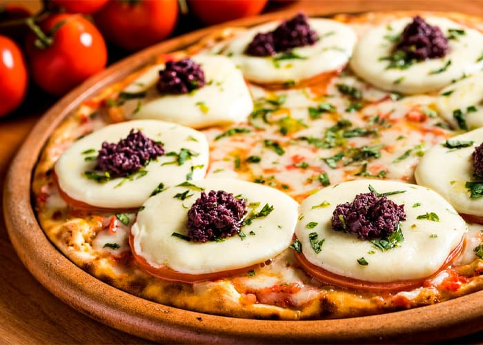

Notícias
Toda sexta-feira
Noite da Pizza!
Rodízio de pizza por R$35 e qualquer bebida pela metade do preço.
Novidades chegando ao cardápio
Carne seca com banana

Essa estranha combinação pode render uma pizza deliciosa. Sua composição é feita de carne seca sem sal e picada, cebolinha verde, banana-nanica em rodelas e requeijão.
Parma com rúcula
O sabor de parma com rúcula é preparado com presunto tipo parma, folhas de rúcula, queijo muçarela, orégano e tomates frescos!
Caprese
A pizza sabor caprese carrega consigo ingredientes como muçarela de búfala, tomate, folhas de manjericão e pesto de azeitonas. Sem falar que a apresentação fica linda!
Nova vaga
Ajudante de Cozinha / Atendente
Proatividade e agilidade, na montagem de pizzas. Saiba trabalhar e equipe e dividir tarefas. Limpeza, verificação de validade dos produtos, atendimento ao público entre outros.
Salário: a partir de R$1.350,00 por mês
-
Benefícios:
- Vale-refeição
- Vale-transporte Horário de trabalho:
- Dias úteis e feriados
- Dias úteis e finais de semana
- Turno de 8 horas Tipos de pagamento adicional:
- 13º salário
- Adicional noturno
- Hora extra